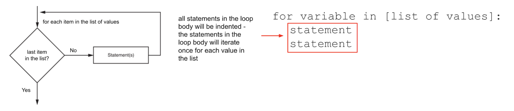

Lesson 5 - for Loops and range
At the end of this lesson, you will be able to:
- Use a
forloop to repeat statements once for each item in a list. - Use the
range()function to repeat statements a specific number of times.
The for loop
A for loop walks through a collection of items, one at a time, running its indented block once for each item. The loop variable takes the value of each item in turn. This is the loop to reach for when you know how many things you're processing.

The collection can be any list of values - and the values don't even have to be the same type:
# print a variety of values from a list
for x in ["hello", 3, 5.5, True, "there!"]:
print(x)Step through this one and watch the loop variable index take each value in turn, run the body, and move on - then notice the final line runs only once, after the loop is done:
The range() function
Typing out [0, 1, 2, 3, 4] by hand gets old fast - and impossible if you want to count to a thousand. The range() function generates a sequence of numbers for you. With one argument, it counts from 0 up to (but not including) that number:
for num in range(5): # generates 0, 1, 2, 3, 4
print(num)That does exactly the same thing as for num in [0, 1, 2, 3, 4]: - just without the typing.
With two arguments, you give a start and a stop: range(2, 10) counts 2 through 9. With three, the last one is a "step" - how much to jump each time. A negative step counts backward:
def main():
# step up by 2: 2, 4, 6, 8
for index in range(2, 10, 2):
print(index)
print()
# step down by 1: 10, 9, 8, ... 2
for index in range(10, 1, -1):
print(index)
main() Bug Alert:
Bug Alert:
The stop value is not included! range(2, 10) generates 2, 3, 4, 5, 6, 7, 8, 9 - it stops before 10. This "off-by-one" surprise catches everyone at least once.
(Want to play with these in your own editor? Download for_loop_1.py and for_loop_2.py.)
 Complete on your own!
Complete on your own!
At one college, full-time tuition is $8,000 per semester and is projected to rise a set percentage each year. Write a program that uses a for loop to display the projected tuition for each of the next several years - assume 3% per year for the next 5 years. (Want to use different numbers? That's fine - just say what rate and how many years you chose in your post, so classmates can follow your output.) Then open Unit 5 Lesson 2 - Tuition Program and post your code. You must post before you can see others; then give feedback to two classmates (suggestions + kudos, always kind).
That's the end of Unit 4! Your programs can now decide (with if/elif/else) and repeat (with while and for). Next unit we turn to collections - the containers that hold many values at once. We start with strings, because a string is really just a sequence of characters you can loop over, index into, and slice up.